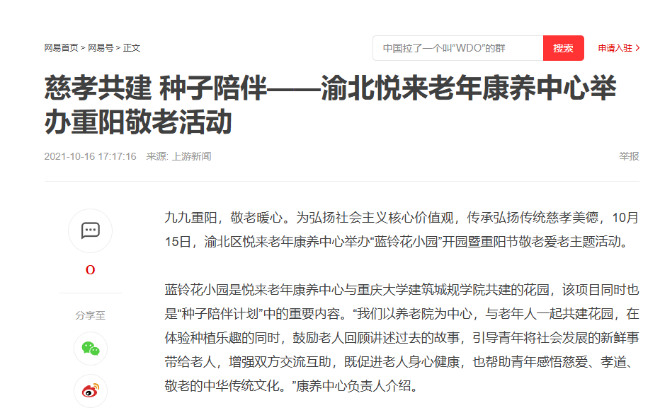
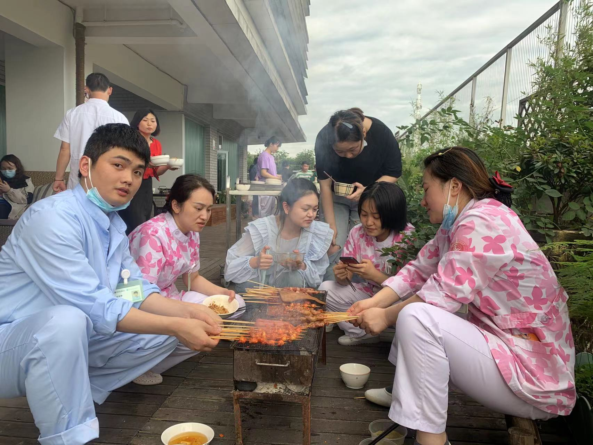

| 项目类型 | 国家自然科学基金课题 + 挑战杯 |
| 竞赛成果 | 挑战杯校级优胜奖 |
| 课题方向 | 山地城市社区老年人体力活动特征及环境影响机制 |
| 核心模式 | "发声–链接–成长"三支柱模型 |
| 覆盖规模 | 300+ 人次 |
本项目依托国家自然科学基金课题《基于行动能力差异的山地城市社区老年人体力活动特征及环境影响机制研究》，针对老龄化社会中养老从业者面临的多重困境，构建了"发声–链接–成长"三支柱赋能模型。
| 壁垒 | 问题 | 解决方案 | 量化成果 |
|---|---|---|---|
| 信息壁垒 | 数字鸿沟 | 公众号传播 | 20+推文，万+阅读 |
| 能力壁垒 | 缺乏专业技能 | 园艺疗法培训 | 标准化课程体系 |
| 认知壁垒 | 社会认知偏差 | 口述史访谈 | 深度访谈50+人 |
| 心理壁垒 | 孤独感疏离 | 数字平台 | 六模块智能匹配 |

